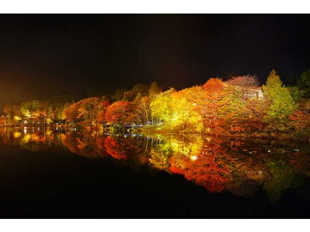
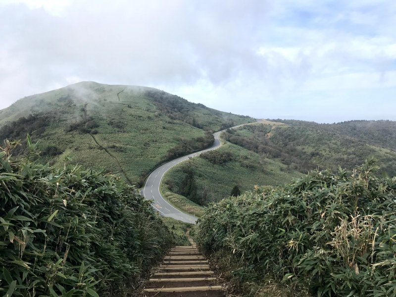
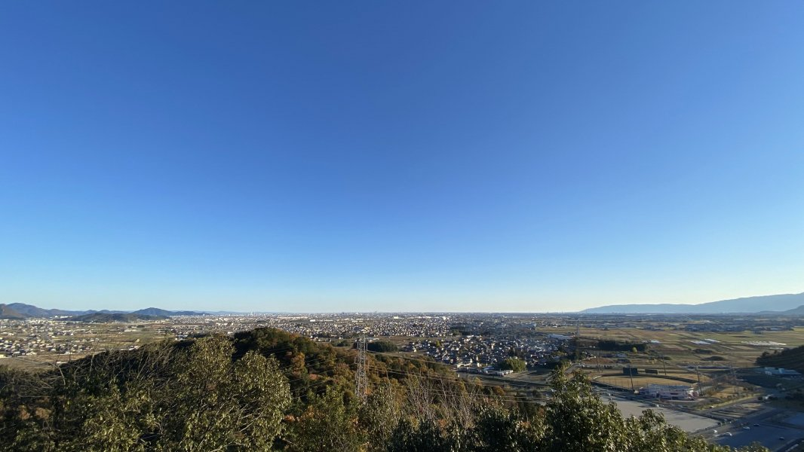

中部編 - ツーリングスポット
茶臼山高原

曲がりくねった山道を走りながら雄大な景色と爽快な風を感じられる。
おすすめポイント:
- 四季折々の美しい風景が広がり、春の新緑や秋の紅葉、夏の高原の涼しさ、冬の雪景色を楽しめる。
- 道路は整備されており、カーブが多く走り応えがあり、ツーリング愛好家にとっては魅力的なルート。
- 高原のレストランでは、地元の新鮮な食材を使った料理が楽しめる。
アクセス情報:
- 住所: 愛知県北設楽郡豊根村坂宇場字御所平70-185
- 最寄りIC: 中央自動車道 飯田IC
- 駐車場: 無料駐車場あり
西伊豆スカイライン

駿河湾や富士山を一望できる絶景を楽しみながら、爽快なワインディングロードを駆け抜けられる。
おすすめポイント:
- 緩やかなカーブと適度なアップダウンが続き、ツーリングの爽快感を味わえる。
- 比較的交通量が少なく、走りやすいのが魅力。
- 西伊豆の絶景スポットで、澄んだ海と美しいビーチを楽しめる。
アクセス情報:
- 住所: 静岡県賀茂郡西伊豆町戸田
- 最寄りIC: 東名高速道路 沼津IC
- 駐車場: 無料駐車場あり
大谷スカイライン野村山展望台

絶景と四季折々の自然が楽しめ、爽快な走行が楽しめる絶好のスポット。
おすすめポイント:
- 適度なカーブと勾配があり、ライディングの楽しさを存分に味わえる。
- 春の桜、夏の新緑、秋の紅葉、冬の雪景色と、季節ごとに異なる美しさを楽しめる。
- 展望台には駐車スペースやベンチがあり、休憩に最適。
アクセス情報:
- 住所: 福島県郡山市湖南町赤津
- 最寄りIC: 東北自動車道 郡山南IC、磐越自動車道 猪苗代磐梯高原IC
- 駐車場: 有料駐車場多数有り